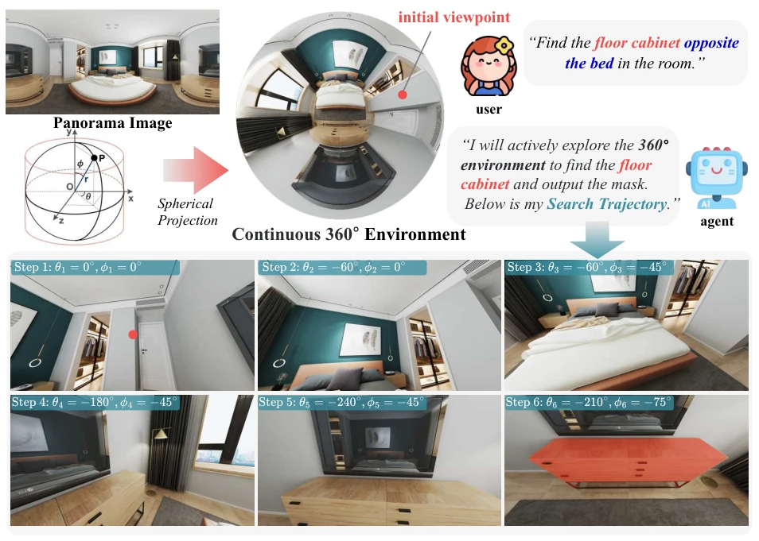
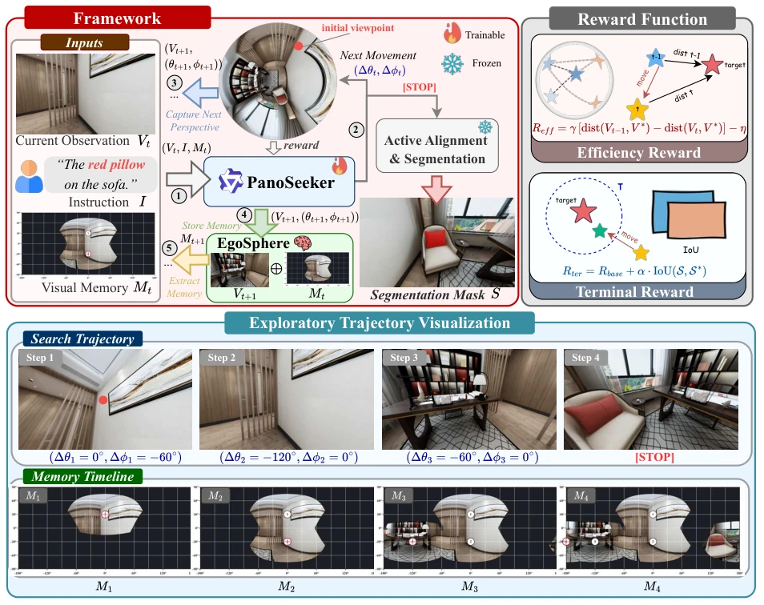
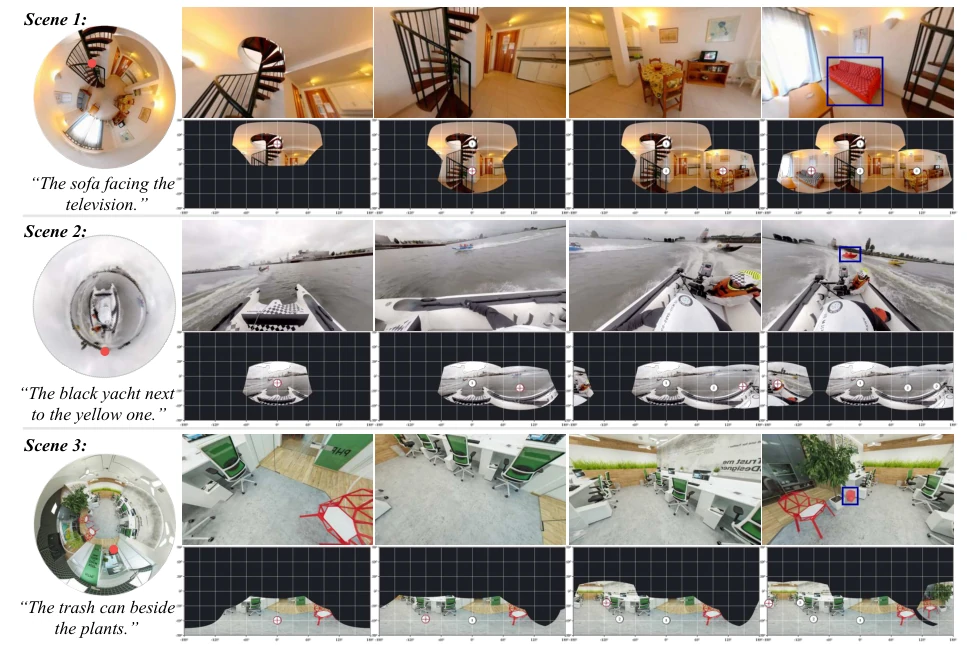

这篇论文给被动式分割模型来了个“大扫除”，强行让它们在 360 度环境里动起来。APRS 任务听起来很性感，本质还是基于全景图的模拟，离真实具身机器人的 3D 重建还有距离。EgoSphere 的设计有点意思，把碎片视角拼成全景图，避免了死循环搜索。不过，依赖专家轨迹 SFT 和 GRPO 训练，数据成本不低。总的来说，是个不错的基准测试，但别指望它马上能落地到真机器人上，毕竟全景图采集和真实 3D 感知还是两码事。此外，实验主要集中在室内场景，户外泛化性存疑，且全景图本身存在几何畸变，可能影响分割精度。
This paper performs a thorough cleanup on passive segmentation models, forcing them to operate within 360-degree environments. The APRS task sounds appealing, but essentially remains a simulation based on panoramic images, still distant from the 3D reconstruction of real embodied robots. The design of EgoSphere is intriguing, assembling fragmented views into panoramic images to avoid cyclic search loops. However, relying on expert trajectory SFT and GRPO training incurs significant data costs. Overall, it is a solid benchmark, but one should not expect immediate deployment on real robots, as panoramic image acquisition and real 3D perception are fundamentally different. Furthermore, experiments focus primarily on indoor scenes, raising doubts about outdoor generalization, and the inherent geometric distortion of panoramic images may affect segmentation accuracy.
Existing Referring Segmentation [1-7] methods mostly rely on static single-view images, which is clearly insufficient in embodied AI [20] scenarios. Agents need to actively explore in continuous 360° environments. Previous works like Refer360 [52] rely on dense instructions, while REVERIE [21] employs passive selection, neither addressing the true active search problem. Meanwhile, explicit 3D modeling [22-28] incurs excessive costs, and 2D panoramic processing [32-34] suffers from geometric distortion. This paper aims to fill this gap by constructing an APRS benchmark, enabling Agents to actively locate targets under complex spatial relationships. Particularly for spatial referring expressions, such as 'the cabinet opposite the bed,' which require cross-view reasoning, existing methods struggle to cope, necessitating new task definitions and evaluation frameworks.

Figure 1 Active Panoramic Referring Segmentation (APRS) requires an agent to search for and segment a target (e.g., finding the “floor cabinet ”) within a continuous 360◦environment based on a user instruction. The bottom row illustrates a search trajectory: the agent adjusts its camera pose (θ, ϕ) to reason about spatial relations (e.g., “opposite the bed”) and search the target for segmentation.
The PanoSeeker framework comprises the memory module EgoSphere and a VLM core. EgoSphere accumulates local observations onto an ERP canvas via spherical projection, forming a global spatial memory to prevent repeated scanning. The Agent inputs the current view, instruction, and memory map, outputting movement actions (Δθ, Δϕ). Training proceeds in two steps: first, learning search strategies via expert trajectory SFT, followed by optimizing efficiency using GRPO [35] reinforcement learning (the reward function includes step count and final IoU). Upon locating the target, segmentation masks are generated through active alignment and SAM-3. EgoSphere employs gnomonic projection to map local views onto a unified sphere, ensuring geometric consistency. The SFT phase utilizes expert trajectory data, while the RL phase uses GRPO to optimize exploration paths and reduce redundant steps. This design addresses issues of excessive context length and spatial information loss in traditional memory methods.

Figure 2 Overview of the PanoSeeker framework. PanoSeeker integrates a VLM with EgoSphere memory to predict movements (∆θt, ∆ϕt) from inputs (Vt, I, Mt). Subsequently, an Active Alignment and Segmentation module generates the mask S. Exploration efficiency is guided by efficiency (Reff) and terminal (Rterm) rewards. Bottom: visualization of a search trajectory and its associated memory accumulation.
The dataset comprises 4,971 scenes and 7,420 samples, covering four expression types: EGO, UNIQ, ALLO, and MULTIHOP. We compared static methods, heuristic scanning, and VLM Agents. PanoSeeker significantly outperforms baselines such as GPT-5.2 on SR (75.4%) and SPL (0.57). Ablation studies demonstrate that EgoSphere is more effective than text logs, and RL further reduces the average step count. Metrics include SR, AS, SPL, and mIoU, comprehensively evaluating search efficiency and segmentation quality. Experiments indicate that static methods perform poorly due to panoramic distortion, heuristic methods require numerous steps, whereas PanoSeeker achieves efficient search through memory and RL. The SPL improvement of approximately 58% validates the effectiveness of the active exploration strategy.

Figure 3 Visualization Results. Red dots denote initial viewpoints; blue boxes highlight final targets found by PanoSeeker. While these visualizations only show 4-step trajectories, extended scenarios can be found in the Appendix.